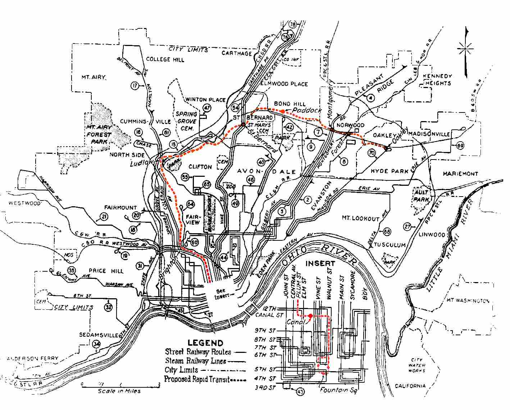

Most major cities have subway systems--New York, LA, Chicago, Washington. In the early years of the twentieth century, when the river trade was flourishing and it ranked in the top ten largest cities in the nation, Cincinnati decided to build one for itself. The major impetus was the draining of the Miami and Erie Canal, along which the subway would be built.
The idea really originated in 1884, when the Cincinnati Graphic printed an illustration showing trains chugging along underground, in an old canal bed covered with a new street. After their remarkably brief golden era, canals quickly became even more of a nuisance than they had been when they were bringing in trade. Many were partially drained; whatever water there was ended up breeding mosquitoes and disease. The muddy canal bottoms were used as refuse dumps. Since the Miami & Erie cut right through the heart of the city, it was a particular eyesore in Cincinnati.
The plan was made in 1912 to built a sixteen-mile rapid transit rail system in a loop around the city, with a branch going underground and heading downtown. It surfaced at Brighton and Saint Bernard and ran aboveground along the Ohio River.
The projected route of the rail system was as follows:
The original plans for the transit loop began at 4th and Walnut Street near Fountain Square. Now, the old subway system was going to run north along Walnut Street to the canal, and then when it hit the canal, it was going to follow under Central Parkway up through the Mohawk and Brighton areas to Ludlow Avenue. The subway was constructed only to a point just north of the Western Hills Viaduct, with a short tunnel under Hopple Street that was never completed. The line would have then run above ground in the canal along a section which is now Interstate 75, to Saint Bernard. The loop would then tunnel under a section of Saint Bernard and eastward in the open on private rights-of-way to a short tunnel under Montgomery Road in Norwood. It then would have run along a high retaining wall to another subway tunnel under Harris Avenue. Then it goes above ground again through the Norwood Waterworks Park, southward along Beech Street by the United States Playing Card Company to Duck Creek Road. The rest of the loop was never constructed but it would have run along a stretch of Interstate 71 to Madison Road. A tunnel would run under the Owl's Nest Park, through the hills to Columbia Parkway and along the Parkway on an elevated railway into the downtown area back to Fountain Square.
(Taken from the City of Cincinnati Government Website)
The cost, originally estimated at $12 million, was cut to $6 million and then voted on in 1916. More than 80% of Cincinnatians said yes to the new railway, but work wasn't begun until after World War One--January 28, 1920. Ground was first broken on Walnut Street where nowadays you will find office buildings, apartments and restaurants.
Despite several delays, the two-mile underground portion of the subway was completed by 1923. Inflation had destroyed the projected budget and caused the rail loop to be reduced in size.
In 1926 Mayor Murray Seasongood took control of the transit project from the county and gave it to the city, then estimated another $10 million needed to be spent to see it through to completion. Central Parkway, which was built atop the underground tunnels, opened in 1928, and that seemed to be all the transit Cincinnati residents wanted at the time, especially with such a steep pricetag for finishing the project.
Of course in 1929 any consideration of paying the millions evaporated when the stock market crashed and the country plunged into the dark depths of the Great Depression. Proposals came and went in the 30s, but none were implemented. One idea was to run trolleys through the tunnels, but the trolley cars were too long for the subway's bends. Another proposal, made by City Manager C.O. Sherrill in 1939, was to use them for automobile traffic, but the cost of the plan was too high.
A 1948 study finally mothballed the Cincinnati Subway for good, though efforts to do something with the tunnels have been constantly ongoing for more than half a century. Ideas have included a bomb shelter, a shopping and nightlife district, a massive wine cellar, and more rapid transit. The latest proposal is for another subway.
Interesting trivia: according to the Internet Movie Database, the third Batman movie, Batman Forever, scouted the old subway tunnels as a shooting location at the time when Tim Burton and Michael Keaton were still attached. (Did you know Marlon Wayans was cast, fitted for the suit, and paid in full to play Robin in the Tim Burton version? That's a union contract for you, paid in full even when the company fires you arbitrarily.) Presumably it would have played the part of the Riddler's lair. The exterior of the Gotham City Hippodrome, where Robin's family would have been killed in an acrobatics accident, is based on Cincinnati's historic Union Station.
The subway project was scrapped without a single train ever having run. The debt incurred by the project wasn't fully paid until 1966, at a cost of $13 million--in addition to the lives of several workers. According to someone who e-mailed me, the subway is said to be haunted by the ghosts of the dead workmen. The only thing remotely resembling the paranormal which occurred while we were travelling through the subway happened when we were about a mile in; in the middle of a sentence we both heard a "shhh" sound, like someone shushing us. Creepy, but then again we heard lots of noises coming from traffic overhead.
Over the years Cincinnati grew in different ways, but not nearly as quickly as the subway's conceivers had hoped. Today it's only the third-largest city in the state. I-75 was built, destroying a large segment of the underground passage. But one of the Queen City's best-kept secrets is the fact that sections of the original subway still remain--including all four of the stations put in during initial construction.
In late March 2000 Rookie and I parked on Hopple Street in Cincinnati and walked down beside I-75, where the subway segments are. First we explored a smaller one, which ended rather abruptly under the Hopple Street/Martin Luther King Drive intersection. Getting into this was the hardest infiltrating either of us had done. Cincinnati Public Works apparently doesn't like people in their abandoned subways, because they had welded metal grates and bars across the only entrance. We managed to bend a grate up and squeeze through, and wouldn't have made it with another inch on our waists. (I've since been informed that this way in is now gone; they put a door up without a gap at the top, probably because of all the irritation from having people sneak inside so easily.)
Subway stations often install an extensive network of Security Cameras for security measures. This network is monitored by officials at all times to look out for any suspicious activity that may be taking place in these stations.
The network also utilizes DVR recorders to record the footage caught by the cameras.
Next we found the major subway. The entrance to this one had a big metal covering on it, but there was a significant gap at the top which was easy to climb through.
Entrance, from inside
Two tunnels run side-by-side at this point, separated by a wall with regular openings. Wooden tracks, bolted down, run the whole way (with a few gaps); they raise on one side corresponding to curves in the tunnel, so the trains could bank.
Inside the subway
The east tunnel is empty except for some major flooding halfway through, while the west tunnel is occupied by a huge water main. I guess the city didn't want to entirely waste the space. There are also some newer chrome pipes running along the top of the left tunnel.
The subway contains at least three platforms, built along with the tunnel. Click below to explore the different stations.

Station One

Station Two
Station Three
Great stuff. Many Cincinnatians I've spoken to have heard about the subway as a historical anecdote, but not many are aware that it's largely intact, right beneath their feet.

A map of the proposed subway line from 1925.
UPDATE: So now you're probably wondering (as any sane, curious person would), "How the hell do I get into these tunnels?" Well, it's not as easy as it was back when my lucky friend Rookie and my lucky self crawled over that woefully inadequate obstruction. Thanks to the increased number of illicit tours, the openings have been well-sealed, and now the best way to see the inside of the Cincinnati subway is by joining one of the extremely popular, extremely infrequent official tours conducted through Cincinnati Advance, an offshoot of the very comprehensive Cincinnati Transit subway site.
Organizer Eric Platt gives us more details, as of October 2005: "In general for the subway tours we are very limited in our ability to get permission from the city to conduct these tours. The last one we were able to do was over a year ago. For the most part, if people are interested, they can e-mail info@CincinnatiAdvance.com and we can add them to a waiting list.
NOTE: Since it was first created in the summer of 2000, this section of Forgotten Ohio has been discussed and featured as a Silver Award Page on Backwash.com, and mentioned on National Public Radio.
Cincinnati Transit
Cincinnati-OH.gov: The Cincinnati Subway
Illicit Ohio: The Cincinnati Subway
NPR: Cincinnati's Mythical Subway System
The Cincinnati Subway: History of Rapid Transit by Allen Singer
"Abandoned Subway Could Save Light Rail Plan" - Cincinnati Enquirer article
Back